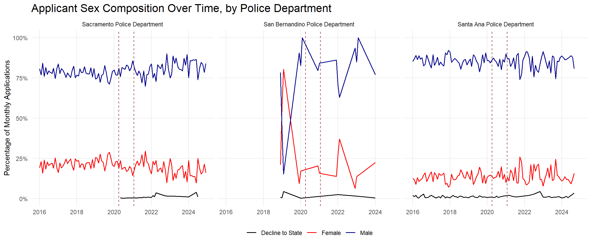
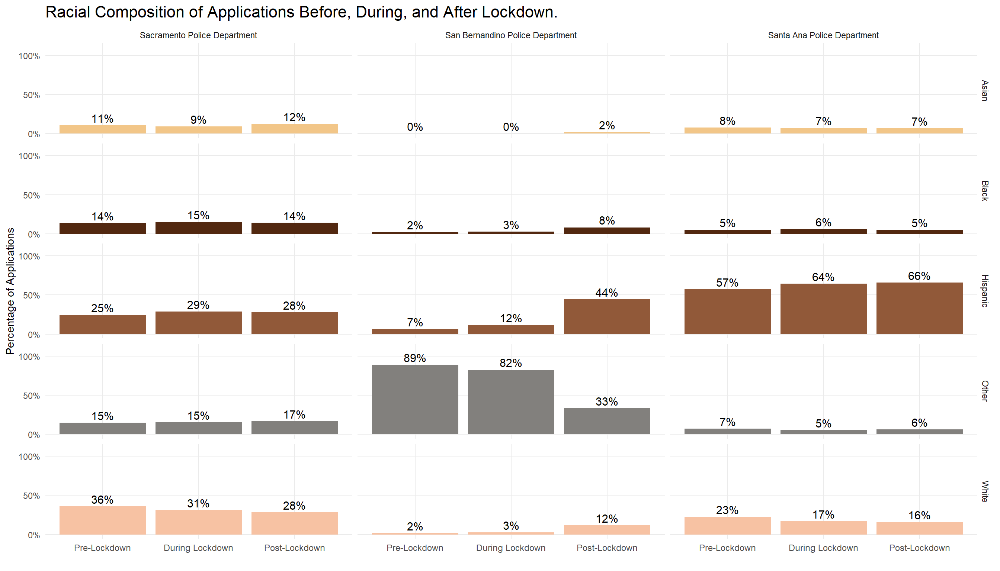
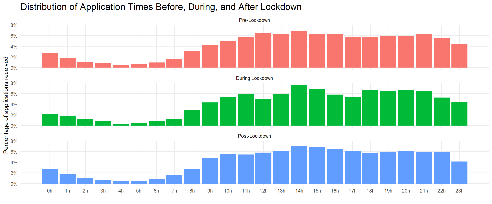

| Table 1: Summary Statistics | |||||||
| Mean | SD | Median | Min | Max | Months | Applications | |
|---|---|---|---|---|---|---|---|
| Sacramento Police Department | |||||||
| Pre-Lockdown | 282.76 | 55.72 | 292.00 | 135 | 394 | 51 | 14,421 |
| During Lockdown | 224.94 | 76.37 | 238.50 | 76 | 334 | 16 | 3,599 |
| Post-Lockdown | 87.65 | 21.50 | 87.00 | 52 | 157 | 43 | 3,769 |
| San Bernandino Police Department | |||||||
| Pre-Lockdown | 185.67 | 174.76 | 164.00 | 10 | 374 | 6 | 1,114 |
| During Lockdown | 222.00 | 244.66 | 222.00 | 49 | 395 | 2 | 444 |
| Post-Lockdown | 91.00 | 89.19 | 29.00 | 16 | 210 | 7 | 637 |
| Santa Ana Police Department | |||||||
| Pre-Lockdown | 167.14 | 49.12 | 164.00 | 72 | 295 | 51 | 8,524 |
| During Lockdown | 110.25 | 36.88 | 128.00 | 37 | 161 | 16 | 1,764 |
| Post-Lockdown | 101.65 | 46.64 | 87.00 | 35 | 230 | 40 | 4,066 |
| Notes: | |||||||
| Table information is based on monthly department-level observations of applications to the 'Police Recruit' position for the Santa Ana Police Department, San Bernardino Police Department, and Sacramento Police Department. Pre-Lockdown is defined as the period before March 5, 2020; During Lockdown as March 5, 2020, through January 25, 2021; and Post-Lockdown as the period after January 25, 2021. The sample period spans January 2016 to December 2024 | |||||||
Descriptive Analysis of COVID-19 Lockdown on Police Recruit Applications
Executive Summary
This report examines changes in applications to the “Police Recruit” position in response to the COVID-19 lockdown period across three cities: Santa Ana, San Bernardino, and Sacramento. The analysis uses department-level application records from January 2016 through December 2024. Applications are compared across three periods: Pre-Lockdown, During Lockdown, and Post-Lockdown, with the lockdown period defined according to California’s stay-at-home order, which began on March 5, 2020 and was lifted on January 25, 2021. The analysis focuses on overall application volume, applicant sex composition, racial composition, and the distribution of application submission times.
Because the three cities reported their data in different formats, each dataset underwent a standardization process before analysis. This primarily included a changing of observed names, like sex and ethnicity.
Overall application volume changed noticeably across the lockdown periods. The clearest pattern is a sharp decline after lockdown, particularly in Sacramento and Santa Ana. San Bernardino remained volatile due to its shorter span of available data, but its average increased during lockdown before declining after lockdown.
Applicant sex composition remains relatively stable in Sacramento and Santa Ana, while San Bernardino shows more variation over time. In Sacramento and Santa Ana, the male share generally stays between the upper 70% and upper 80% range, with female applicants constituting most of the remaining applications.
Application submission times are very similar before, during, and after lockdown. Applications are concentrated during daytime and early evening hours across all three periods, with relatively few submitted overnight. The lockdown period does not appear to meaningfully alter the overall time-of-day pattern.
These findings should be interpreted as descriptive rather than causal. While application volume declined most clearly in the post-lockdown period, that change may reflect a combination of pandemic-related disruptions, broader labor market conditions, and shifting public interest in law enforcement careers rather than the lockdown period alone.
Data
This dataset combines Police Recruit application records from Santa Ana, San Bernardino, and Sacramento into one standardized file. Each column captures a specific part of an application record so the data can be reviewed consistently across departments
Date applied: The date the application was submitted.
Year-month applied: The year and month the application was submitted
Time applied: The time of day the application was submitted.
Department: The police department associated with the application.
Sex: The applicant’s recorded sex.
Ethnicity: The applicant’s recorded ethnicity or racial category.
Zip Code: The applicant’s reported ZIP code.
Before COVID: Indicator for whether the application was submitted before the COVID-19 lockdown period.
During COVID: Indicator for whether the application was submitted during the COVID-19 lockdown period.
After COVID: Indicator for whether the application was submitted after the COVID-19 lockdown period.
Summary Statistics
Methods
The code harmonizes police application data from Santa Ana, Sacramento, and San Bernardino into a single standardized dataset. It defines a target schema with seven variables: application date, application month, application time, department, sex, ethnicity, and zip code. The script then imports raw application files from each jurisdiction, standardizes variable names, derives date and time fields, recodes ethnicity and sex categories, combines the datasets, and exports the final file as a CSV.
The script loads the tidyverse, readxl, and hms packages. . The script begins by creating a vector named desired_col_names. This vector defines the required column structure for the final harmonized dataset. The required variables are date_applied, year_month_applied, time_applied, department, sex, ethnicity, and zipcode.
For Santa Ana, the script reads an Excel file containing police recruit applicant data from 2016 to 2024. It skips the first row and cleans the column names. The code then creates three standardized time variables: date_applied converts the original date_received field into a date; time_applied extracts a time value from date_received using a regular expression and converts that value into an hms time object; and year_month_applied rounds the application date down to the first day of the month. The code then checks the existing ethnicity, sex, and zip code fields. It renames the zip code field to zipcode, creates a department identifier with the value “SAPD”, and selects only the target columns.
For Sacramento, the script reads an Excel file containing applicant data and cleans the column names. It renames several fields to match the target schema. application_received becomes date_applied, ethnic_origin becomes ethnicity, zip becomes zipcode, and gender becomes sex. The script then creates year_month_applied by rounding the application date down to the month. It attempts to extract an application time from the date field, although the comments indicate that this source does not contain time information. The code also assigns the department value “SPD” and converts date_applied into a date object. It then selects the target columns.
For San Bernardino, the script first lists all files in the San Bernardino applications folder. It constructs complete file paths and reads each Excel file into a single dataset using map_df(). The code skips the first row of each file and cleans the column names. It then renames the relevant variables to match the target schema. gender becomes sex, zip becomes zipcode, and date_received becomes date_applied. The script creates year_month_applied, extracts time_applied, assigns the department value “SBPD”, converts date_applied into a date object, and selects the target columns.
The next section standardizes ethnicity values across the three jurisdictions. The code first inspects the ethnicity categories in each harmonized dataset. Sacramento’s ethnicity classification serves as the reference structure. Santa Ana ethnicity labels are recoded into abbreviated categories such as “HISPANIC”, “WHITE”, “TWOMORE”, “ASIAN”, “PACISLAND”, “BLACK”, and “AMINDIAN”. Missing Santa Ana ethnicity values are assigned “NOTSPEC”.
San Bernardino ethnicity values are standardized using case_when() and str_detect(). This approach identifies categories through text patterns rather than exact string matches. Values beginning with “Black” become “BLACK”, values beginning with “Hispanic” become “HISPANIC”, values containing “Vietnam” become “ASIAN”, and values beginning with “Two or more,” “American Indian,” “Asian or,” or “White” are assigned to their respective standardized categories. Missing values become “NOTSPEC”.
Sacramento ethnicity values receive minor adjustments. “FILIPINO” is recoded as “ASIAN”, “HAWPACIF” is recoded as “PACISLAND”, and both “MENA” and “O” are recoded as “OTHER”.
After standardizing ethnicity, the script combines the three jurisdiction-specific datasets using bind_rows(). The combined dataset is stored as police_applications.
Findings

Figure 1 shows that applicant sex composition remained stable across the study period. Male applicants made up the largest share of monthly applications in all three departments, while female applicants constituted the second largest share. Sacramento and Santa Ana show little evidence of a major shift during or after lockdown. Sacramento remained near an 80 percent male and 20 percent female distribution, while Santa Ana remained closer to an 85 percent male and 15 percent female distribution. San Bernardino shows more volatility, but this pattern likely reflects fewer monthly applications rather than a sustained change in applicant composition. Overall, lockdown does not appear to be associated with a consistent change in applicant sex composition across departments.

Figure 2 indicates that racial composition changed unevenly across departments after lockdown. Sacramento shows the most stability, with only small changes across racial groups and periods. Santa Ana remained majority Hispanic in all periods, and the Hispanic share increased from 57 percent before lockdown to 66 percent after lockdown. The White applicant share in Santa Ana declined from 23 percent to 16 percent. San Bernardino shows the largest compositional shift, with the Hispanic share increasing from 7 percent before lockdown to 44 percent after lockdown and the Other category declining from 89 percent to 33 percent. This pattern suggests that post-lockdown applicant composition changed most substantially in San Bernardino and more moderately in Santa Ana.

Figure 3 suggests that application timing changed little across lockdown periods. Applications remained concentrated during daytime and evening hours before, during, and after lockdown. Very few applications were submitted during early morning hours, especially between 2:00 a.m. and 6:00 a.m. The highest submission shares occurred in the afternoon and evening, especially around 14:00 through 21:00. The lockdown period does not show a clear departure from the pre-lockdown pattern. Overall, the distribution of application times remained broadly consistent, which suggests that lockdown did not meaningfully alter when applicants submitted materials.
Conclusion
This report examined changes in Police Recruit applications before, during, and after the COVID-19 lockdown period in Santa Ana, San Bernardino, and Sacramento. The analysis focused on application volume, applicant sex composition, racial composition, and application submission times. The main finding is that application volume changed more clearly than applicant composition. Several limitations affect the interpretation of these findings. The analysis is descriptive, so it does not establish that lockdown caused the observed changes. San Bernardino had a fixed application window, whereas Santa Ana and Sacramento had open hiring. Sacramento did not include information on time applied, which may have altered our distribution of application times.
Future reports could focus on application origin via an observance of ZIP code origin. Future work could also use statistical models to test whether changes after lockdown were larger than normal month-to-month variation. This would help separate lockdown-related patterns from broader changes in police recruitment.